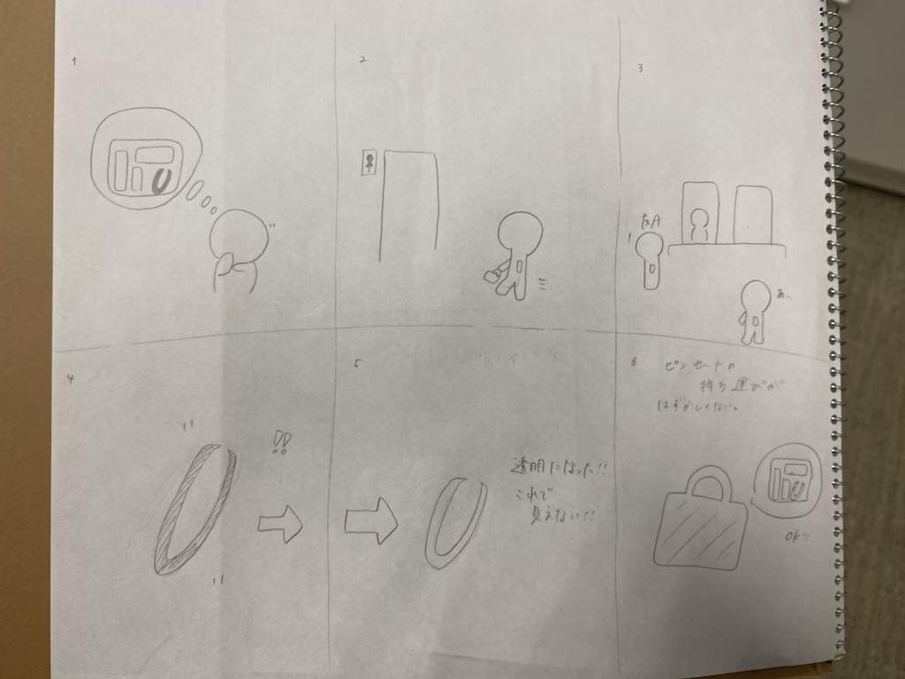
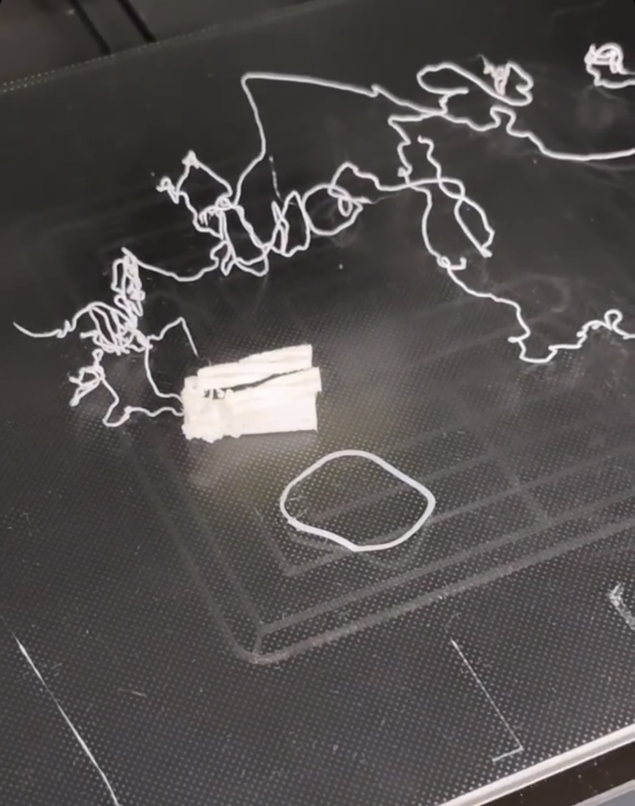
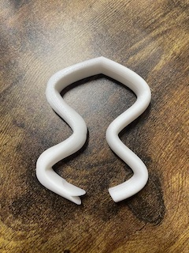

まず班でどのようなピンセットが欲しいか話し合いました。
その時出た案の中からストーリーを考えました！

透明なピンセットを作りたい！でも透明なピンセットは素材的に難しい。デザインを変えてみよう！ということでデザインを変更することにしました。
そこから自分でイラストを描いて具体化し,

このイラストから製作したものがこちらです！
stlファイル
ねじれの部分は一番頑張った部分なので、製作方法を紹介します。
まずこのようなスケッチを書きます。


ここから作成の欄のスイープを選択し,プロファイルとパスをそれぞれ選択します。
選択すると下の部分に

ねじり角度という欄が出てくるので、自分の好きな角度を打ち、確定させると本体にねじりを加えることができます。
＜作品の説明＞
通常のピンセットはまっすぐで使いやすさを重視しているものが多いが、
そのまま持ち歩くのは少し恥ずかしい。そこでお洒落なデザインにすることで持ち運びやすいようになるのではと思い
まっすぐの部分をねじれさせ、デザイン性のあるものにしました。
＜なぜこの作品を作ろうという想いに至ったか＞
自分自身がピンセットというものに対してもっとお洒落なものがあれば外出先でも使用しやすいのではないかと思っていました。
シンプルなデザインのものが多く、ピンセット！と見たらすぐわかるものを少しでも変えれたらと思い、この作品を制作しようという想いに至りました。
実際に3Dプリンターで製作してみて、
一回目が

二回目が

と上手く製作することができませんでした。
スイープを利用して先端が蛇のようになっているピンセットも作成をしてみました。

こちらは窪みのところに指を置き、膨らんでいる部分を持つとピンセットの役割として使用することができます。
今回3Dプリンターを利用してみて、印刷したいものが細すぎたりすると立てた状態での印刷は上手く印刷することができない、小さいためこのデザインでは細かくなってしまうのではと思いました。
ねじりを使用した他の作品を製作することができた時、またここに掲載していきたいです。